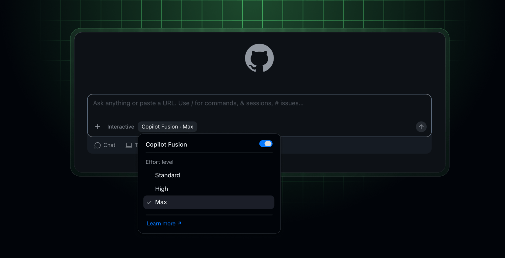
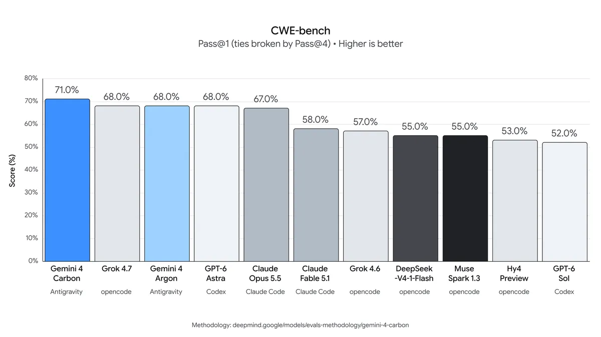
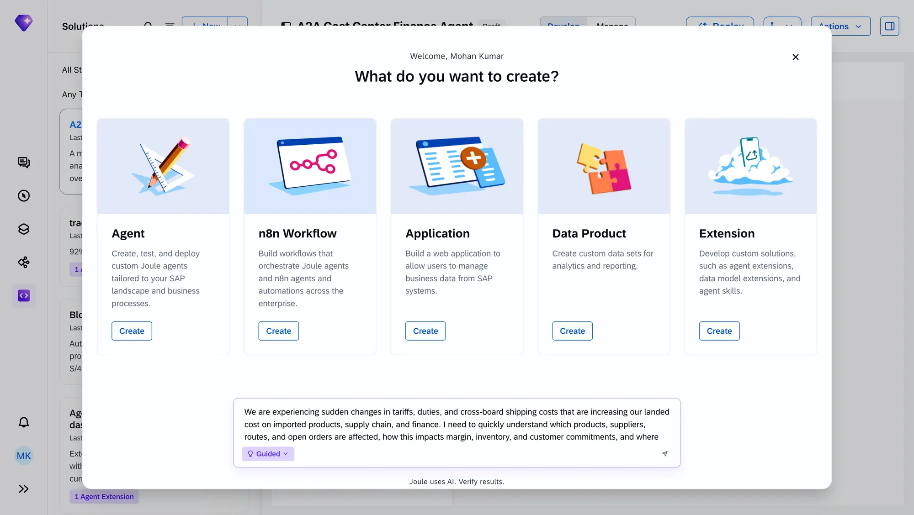
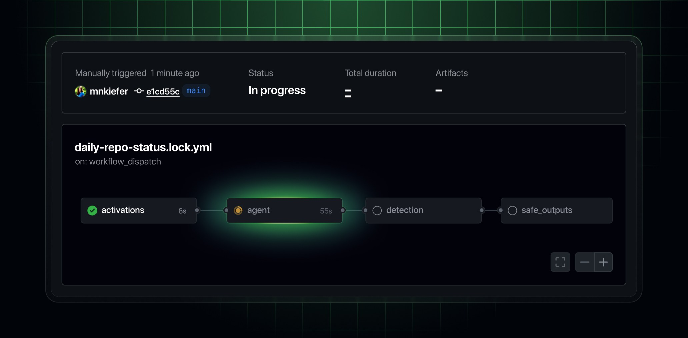

AI NEWS ISSUE 31
GitHub Copilot Fusion, 작업마다 모델을 고르다
코딩 도구가 작업에 맞는 모델과 검토 방식을 선택하기 시작했습니다. Fusion의 실행 방식과 비용, Gemini 4 Carbon의 보안 성능, SAP의 모델 선택 전략과 GitHub의 자동화를 함께 살펴봅니다.
AT A GLANCE
30초 요약
- GitHub Copilot Fusion이 정식 출시됐습니다. 사용자는 작업 수준을 고르고, 도구가 모델과 실행 방식을 정합니다.
- Gemini 4 Carbon은 보안·긴 작업의 성능을 강조했습니다. 현재는 일부 보안 전문가부터 접근을 넓히는 단계입니다.
- SAP는 필요한 품질을 유지하면서 모델 비용을 낮추고 있습니다. n8n 연동과 새 게이트웨이는 제공 시점이 다릅니다.
- GitHub Agentic Workflows는 Markdown으로 정의한 판단 작업을 Actions에서 실행합니다. 기본 읽기 권한과 출력 검증을 갖춰 정식 출시했습니다.
자료 확인 2026년 10월 29일 한국시간 기준입니다. 주요 발표의 원문 날짜는 10월 28일이며, 제품 문서와 평가표의 현재 내용도 함께 확인했습니다.
01 / GITHUB COPILOT FUSION
모델 이름 대신,
작업에 필요한 수준을 고릅니다
GitHub가 Copilot Fusion을 정식 출시했습니다. 새 모델을 만든 것이 아니라, 요청마다 사용할 모델과 협업 방식을 정하는 기능입니다. 개발자가 Standard·High·Max 중 수준을 고르면 Fusion이 처리를 맡습니다. VS Code, Copilot 앱·CLI, JetBrains IDE에서 제공됩니다. GitHub 발표 ↗


실행 방식은 세 가지입니다. 현재 제품 문서는 Standard를 단일 모델 중심으로 설명하고, High·Max에서는 추가 검토를 포함할 수 있다고 안내합니다.
Single
한 모델이 처리합니다요청을 받아 도구를 쓰고 결과를 만듭니다.
Cascade
검토 뒤 필요하면 넘깁니다효율적인 모델의 초안을 평가해 채택하거나 더 강한 모델에 맡깁니다.
Critique
다른 모델의 검토를 모읍니다초안을 다른 모델들이 검토하고, 원래 모델이 의견을 반영해 고칩니다.
공식 문서를 바탕으로 정리한 설명입니다. 출시 글은 Critique를 생성·검토·수정으로 요약하고, 제품 문서는 여러 모델의 병렬 검토도 설명합니다. Fusion 제품 문서 ↗
평가 점수와 작업 비용을 함께 봅니다
Artificial Analysis의 Coding Agent Index v2.0에서 Fusion Max는 60점, Claude Code의 Opus 5.5 Max 설정은 62점입니다. 저장소 수정·터미널 작업·기술 질의응답의 세 평가를 같은 비중으로 합친 점수입니다. 평가기관 원문 ↗
| 항목 | Fusion Max | Claude Code Opus 5.5 Max |
|---|---|---|
| Coding Agent Index v2.0 | 60점 | 62점 |
| 작업당 평균 API 비용 | 약 절반 | 비교 기준 |
| 작업당 소요 시간 | 약 40% 짧음 | 비교 기준 |
점수는 10월 29일 평가표의 표시값이며, Claude Code는 Max·Default Fallback 설정입니다. 상대 비용·시간은 GitHub 발표 기준으로, 구독료나 실제 프로젝트 개발 기간의 절감률은 아닙니다.
실제 과금은 사용한 각 모델의 요금을 합산합니다. 유료 플랜의 30% 할인은 제품 문서상 2026년 11월 30일까지의 별도 혜택입니다. 또한 Fusion이 초안을 버려도 그 초안이 이미 바꾼 파일은 자동으로 되돌아가지 않습니다. 검토가 붙었다는 사실과 작업 공간이 안전하게 정리됐다는 판단은 나누어야 합니다.
우리 업무에서는 빌드 설정 수정과 여러 서비스를 거치는 예약 취소 오류를 같은 방식으로 처리할 필요가 없겠습니다. 다만 모델을 바꿀 때마다 검토와 재시도가 늘 수 있으니, 검증까지 마친 한 건의 비용을 비교해야 효과를 알 수 있습니다.
02 / GOOGLE GEMINI 4 CARBON
취약점을 찾고 고치는 능력,
접근 범위는 단계적으로 넓힙니다
Google은 Gemini 4 Carbon을 발표하며 복잡한 코딩과 오래 이어지는 작업, 사이버 보안을 강조했습니다. 발표 주간에는 일부 보안 방어 전문가에게 먼저 제공하고, Fairwind 프로그램의 신뢰할 수 있는 파트너로 확대할 계획입니다. Google 발표 ↗
별도로 Artificial Analysis의 Intelligence Index v5.0에서 Carbon High는 59점으로, 확인 시점의 공개 결과 중 가장 높았습니다. Opus 5.5 Max의 비교 설정은 58점입니다. 앞 절의 코딩 에이전트 지수와는 다른 종합 평가이므로 점수를 섞어 읽지 않아야 합니다. 독립 평가 원문 ↗


Google이 발표한 수치는 취약점 발견 SEC-bench Pro 88.2%, 악용 가능성을 시험하는 ExploitGym 54.8%, 수정 능력 CWE-bench 71.0%입니다. 서로 다른 과제의 점수입니다. 안전한 코드 생성 성공률이 Argon의 두 배 이상이라는 설명은 Google 내부 평가에 해당합니다.
일반 개발자·기업·소비자 대상의 구체적인 개방일은 제시하지 않았습니다. 예고한 API 도입 요금은 100만 토큰당 입력 2달러·출력 10달러이며, 도입 기간 이후에는 4달러·20달러입니다.
커머스의 인증·결제 코드를 점검할 때도 발견, 재현, 수정, 회귀 테스트는 각각 필요합니다. 모델이 찾아낸 문제의 수보다, 정상 주문과 예외 처리를 유지하면서 수정할 수 있는지가 실제 도입의 판단 기준이 되겠습니다.
03 / SAP JOULE STUDIO
업무가 요구하는 품질을 먼저 정하고,
그 안에서 모델 비용을 줄입니다
SAP는 TechEd 2026에서 Joule Studio·Joule Work와 Business AI Platform의 확장을 발표했습니다. 한국어 발표에 따르면 개발자는 70개 이상의 모델을 선택해 에이전트를 만들 수 있고, 얼리 어답터 고객은 Joule Studio 안에서 n8n 워크플로를 설계·실행할 수 있습니다. SAP 한국어 발표 ↗


같은 날 Reuters가 직접 취재한 SAP의 모델 교체 전략도 나왔습니다. CFO Dominik Asam은 내부 컨설팅 도우미 등을 더 저렴한 모델로 바꾸면서, 업무에 필요한 성능을 충족하는 모델을 고른다고 설명했습니다. 사용이 늘어 전체 지출은 증가할 수 있지만, 처리 규모가 커져도 수익성을 유지하겠다는 취지입니다. Reuters 취재 원문 전재 ↗
Reuters는 SAP가 계산 자원보다 완료한 작업을 기준으로 과금한다고 전했습니다. 제품별 계약 단가를 비교한 자료는 아니지만, 같은 결과를 더 적은 비용으로 만드는 일이 사업 수익성과 연결된다는 점을 보여줍니다.
발표한 기능의 제공 시점을 나눠 봅니다
| 기능 | 제공 상태 |
|---|---|
| Joule Work·Joule Studio | 정식 제공을 단계적으로 확대 중 |
| Studio에서 n8n 설계·실행 | 얼리 어답터에게 제공, 정식 제공은 2027년 1분기 예정 |
| Enterprise AI Gateway | 인증·정책·라우팅·감사 통합, 2027년 1분기 예정 |
| BDC Ontology Manager | 업무 관계·규칙을 관리, 2026년 11월 베타 예정 |
한국어 발표에서 ‘제공 예정’으로 소개한 기능은 영문 세부 안내의 일정으로 보완했습니다. SAP Innovation News Guide ↗
상품 분류와 복잡한 정산 조사에는 다른 모델이 맞을 수 있습니다. 모델을 많이 연결하는 것보다, 업무별 합격 기준과 허용할 데이터·실행 범위를 먼저 정하는 편이 재사용하기 좋은 자산이 되겠습니다.
04 / GITHUB AGENTIC WORKFLOWS
판단이 필요한 일을,
기존 Actions 실행에 연결합니다
GitHub Agentic Workflows도 정식 출시됐습니다. Markdown에 자연어로 적은 자동화 정의를 Actions YAML로 컴파일하고, 코딩 에이전트로 이슈 분류·CI 실패 분석·문서 갱신·테스트 작성을 수행하는 오픈소스 프로젝트입니다. 기존 Runner 그룹과 정책을 재사용합니다. GitHub 발표 ↗


에이전트는 기본적으로 읽기 전용 권한으로 시작하고, 네트워크 접근을 제한하는 격리 환경에서 실행됩니다. Safe Outputs가 출력을 검증하고, 별도 위협 탐지 작업이 제안된 변경을 적용 전에 살핍니다. 이번 정식 출시에는 자체 호스팅 ARC Runner, 모델 라우팅, 예산 예측, 실행 격리 개선도 포함됐습니다.
GitHub Free·Team·Enterprise에서 제공되며 기본 Copilot CLI 엔진에는 Copilot 라이선스가 필요합니다. CI 실패 원인을 찾는 판단을 맡기더라도, 수정 코드의 테스트와 반영 기준은 팀이 정해야 합니다.
자동화 지침을 고치는 일에도 검토를 둡니다
별도 제품인 Copilot Automations에는 실행 결과를 보고 개선안을 제안하는 기능이 추가됐습니다. 사람이 분류 라벨을 고쳤는지, 리뷰 의견을 받아들였는지 등을 참고해 지침·도구·트리거의 수정을 제안합니다. 제안은 사용자가 검토하고 수락해야 적용됩니다. 자기 개선 기능 발표 ↗
리뷰 의견이 많이 채택됐다고 코드가 더 안전해졌다고 단정할 수는 없습니다. 다음 자동화에 반영할 때도 재작업이나 잘못된 지적이 실제로 줄었는지 확인할 필요가 있습니다.
OUR VIEW
모델의 성능과,
일을 끝내는 효율을 함께 봅니다
이번 소식을 읽으며 주목한 것은 좋은 답을 만드는 능력과, 검증된 결과까지 가는 비용을 따로 살피기 시작했다는 점입니다. Google은 모델의 능력을 높이고, GitHub는 모델 선택·검토·자동화를 묶으며, SAP는 업무 품질을 유지하면서 원가를 낮추려 합니다.
커머스에서도 상품 설명 분류는 작은 모델로 충분할 수 있고, 여러 참여 조건과 보상 정책이 얽힌 이벤트 검토는 더 깊은 분석이 필요할 수 있습니다. 참여 횟수나 남은 경품 수량처럼 정확히 세어야 하는 값은 코드가 계산하고, 모델은 문서의 충돌이나 빠진 조건을 찾는 데 쓸 수 있겠습니다.
처음부터 복잡한 모델 선택 시스템을 만들 필요는 없겠습니다. 먼저 반복 작업 하나의 입력·완료 조건·실패 시 중단 기준을 정해 보고, 그 안에서 모델을 바꿔 보자는 제안입니다. 추가 검토가 사람의 일을 줄이는지까지 확인해야 Workless Engineering에 가까워집니다.
OUR EXPERIMENT / 제안
참여형 이벤트를 열기 전에,
조건 충돌과 지급 오류를 찾아봅니다
일주일 동안 출석하고, 퀴즈를 풀고, 행사 상품을 구매하면 보상을 받는 이벤트를 준비한다고 해보겠습니다. 기획서·고객 안내·개발 설정이 서로 다르거나 취소와 재참여가 겹치면, 정상 참여자를 탈락시키거나 준비한 수량보다 많이 지급할 수 있습니다. 이런 문제를 오픈 전에 재현하는 작은 점검 도구를 만들어 보는, 아직 실행하지 않은 실험 제안입니다.
7일 동안 세 조건을 모두 채우면
100명에게 5천 포인트씩 · 1인 1회
배송비와 취소 금액은 구매 합계에서 제외합니다.
먼저, 어떤 규칙으로 운영할지 정합니다
- 입력 자료두 문서가 서로 다릅니다기획서
선착순 100명FAQ
추첨 100명 - AI충돌과 빠진 조건을 질문으로 바꿉니다
“선착순과 추첨 중 어느 쪽인가요?”
조건 추출 모델 → 원문을 다시 확인하는 검토 모델
“구매를 취소하면 다음 대기자에게 넘기나요?” - 사람담당자가 규칙을 결정합니다
“선착순으로 예약합니다. 취소로 자격을 잃으면 다음 대기자에게 넘깁니다.”
답이 정해지기 전에는 지급 설정을 확정하지 않습니다. - 코드정해진 규칙에 참여 기록을 넣어 봅니다
누가 자격을 얻고, 누가 대기하며, 몇 명에게 지급되는지 계산합니다.
입력: 확정 규칙 + 가상 참여 이력 → 출력: 상태 변화와 오류
그다음, 참여 기록을 한 단계씩 넣어 봅니다
가상 담당자의 답변으로 ‘자격을 갖춘 접수 순서대로 보상 예약, 종료 전 취소로 자격을 잃으면 예약 해제와 대기자 승계, 종료 24시간 뒤 데이터 대조를 마치고 지급 확정’을 정했다고 해보겠습니다. 아래 기대 결과는 이 결정이 반영된 경우입니다.
가상 참여 기록 재생
기록 하나가 바뀌면, 보상 상태도 달라집니다
아래 표에서 상황별 기대 결과를 읽을 수 있습니다. JavaScript가 켜져 있으면 상황을 골라 단계별 상태 변화를 볼 수 있습니다.
네 가지 상황의 기대 결과를 표로 보기
| 입력 상황 | 기대 동작 |
|---|---|
| 같은 날 출석 버튼을 세 번 누름 | 출석은 하루로 계산합니다. 퀴즈·구매 조건을 채워도 3일 출석 자격은 얻지 못합니다. |
| 다른 조건을 채운 회원이 5만 5천 원 구매 후, 종료 전에 1만 원을 취소 | 유효 구매액이 4만 5천 원이 되어 예약을 해제하고, 자격을 유지한 대기자에게 순번대로 넘깁니다. |
| 99명이 예약한 상태에서 두 회원이 동시에 마지막 조건을 달성 | 서버에 기록된 접수 순번으로 한 명만 추가 예약합니다. 나머지는 대기하고, 예약 수는 100명을 넘지 않습니다. |
| 지급 응답이 끊겨 같은 지급 요청을 다시 보냄 | 이벤트·회원별로 같은 지급 번호를 사용해 기존 처리 결과를 확인합니다. 같은 회원에게 두 번 지급하지 않습니다. |
정상 참여, 자정 경계, 중복 통지, 취소 통지가 늦게 도착하는 경우를 합성 이력에 섞습니다. 화면에는 대상자 명단만 보여주지 않고, 적용한 규칙과 참여 기록, 예약·대기·해제·지급 상태가 바뀐 이유를 함께 표시합니다. 실제 포인트 대신 모의 지급 기록을 남겨 다시 재생해 볼 수 있게 합니다.
사람이 놓친 조건을 줄였는지 확인합니다
먼저 같은 자료를 사람이 체크리스트로 검토한 결과와 비교합니다. 미리 심어 둔 충돌·누락을 얼마나 찾았는지, 정상 규칙을 문제라고 잘못 지적했는지, 근거를 확인하고 수정하는 데 사람이 얼마나 시간을 썼는지 봅니다. 기준 답안은 모델 출력과 별개로 준비하고, 도구를 조정한 사례는 최종 평가에서 뺍니다.
통과 기준
미해결 정책이 있으면 지급 설정 확정을 막습니다. 확정된 시험 규칙에서는 1인 1회, 예약 중인 인원과 지급 완료 인원의 합계 100명 이하, 총지급 50만 포인트 이하를 지켜야 합니다. 같은 이력을 다시 넣어도 추가 지급이 생기면 실패입니다.
이 흐름이 유효한지 확인한 뒤, 조건 추출 단계만 더 저렴한 모델로 바꿔도 누락과 검토 부담이 늘지 않는지 시험할 수 있습니다. 먼저 업무를 끝내는 기준을 세우고, 그다음 역할별로 모델을 고르는 순서입니다. 실험 결과물은 근거가 붙은 규칙 파일, 해결해야 할 질문, 재생 가능한 참여 이력, 지급 오류 보고서로 남깁니다.
구현 범위와 예외 처리 자세히 보기
결정된 규칙을 실행 가능한 형태로 만듭니다
규칙 파일에는 기간·시간대·대상 상품·참여 조건·선정 방식·취소 처리·수량과 근거 문장을 넣습니다. 이번 가정에서 하루는 한국시간 기준이고, 참여 기간은 시작 시각을 포함하되 종료 시각은 제외합니다. 같은 시각의 접수는 서버가 부여한 순번으로 구분합니다. 임의 코드를 실행하는 대신 지원하는 조건만 읽는 작은 검증기를 만들고, 해석할 수 없는 규칙은 보류합니다.
늦게 도착한 이력과 중간 실패를 재현합니다
기록마다 고유 번호·발생 시각·접수 순번을 보존해 중복과 처리 순서 뒤바뀜을 시험합니다. 종료 전에 발생한 취소를 늦게 받았을 때도 종료 24시간 뒤의 대조 시점까지 반영합니다. 원천 주문 이력과 대조가 끝나지 않으면 지급 확정을 보류합니다. 지급을 확정한 뒤의 반품·회수는 별도 정책이 필요한 다음 실험으로 남깁니다.
예약과 잔여 수량 변경은 함께 성공하거나 함께 취소되게 하고, 모의 지급기는 같은 지급 번호의 재요청에 같은 결과를 돌려주도록 만듭니다. 두 요청이 마지막 한 자리를 동시에 차지하려는 경우와 지급 직후 응답이 끊기는 경우를 재현합니다. 모델 호출의 시간 초과·형식 오류는 검토 미완료로 남겨 확정 단계로 넘기지 않습니다.
검토 효과와 모델 비용을 나눠 봅니다
문서의 충돌 탐지와 코드의 지급 오류를 따로 집계합니다. 사람의 수동 검토와 도구 보조 검토는 같은 자료를 쓰되 담당자와 검토 순서를 교차 배정해, 앞서 본 답을 기억하는 영향을 줄입니다. 비용 비교에서는 검토까지 통과한 이벤트 설정 한 건을 단위로 삼고, 실패·재시도 호출과 사람의 수정 시간도 포함합니다. 단계별 모델 교체 때는 입력·검토 모델·검증 코드를 고정합니다.
SOURCES
읽은 자료
- GitHub · Copilot Fusion 정식 출시 2026. 10. 28
- GitHub Docs · 실행 방식·과금·제한 사항
- Artificial Analysis · Coding Agent Index v2.0
- Google · Gemini 4 Carbon 발표와 보안 평가 2026. 10. 28
- Artificial Analysis · Intelligence Index v5.0
- SAP · TechEd 2026 한국어 발표 2026. 10. 28
- SAP · 기능별 제공 일정 / Joule Studio 공식 제품 투어
- Reuters · SAP의 모델 교체와 비용 전략, 정정 반영 전재본 2026. 10. 28
- GitHub · Agentic Workflows 정식 출시 2026. 10. 28
- GitHub · Copilot Automations의 개선 제안 2026. 10. 28
제품 기능은 공식 자료, 모델 교체 전략은 Reuters의 직접 취재를 근거로 썼습니다. 평가기관의 결과와 공급사 평가, 헬로우 휴먼의 해석·실험 제안을 구분했습니다.